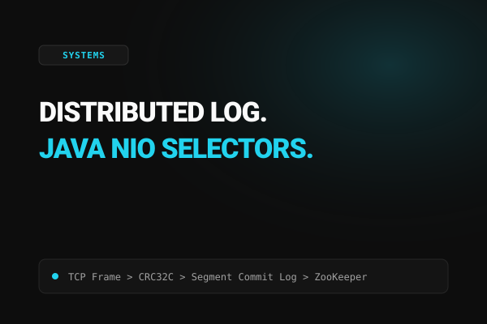
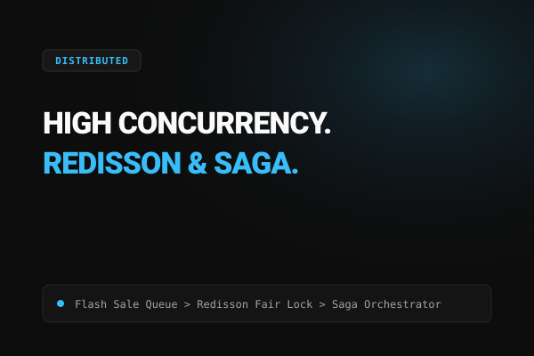
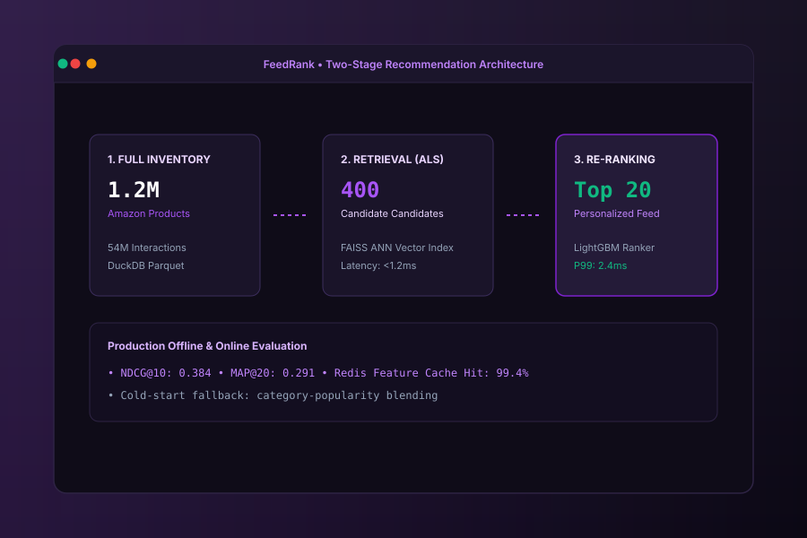
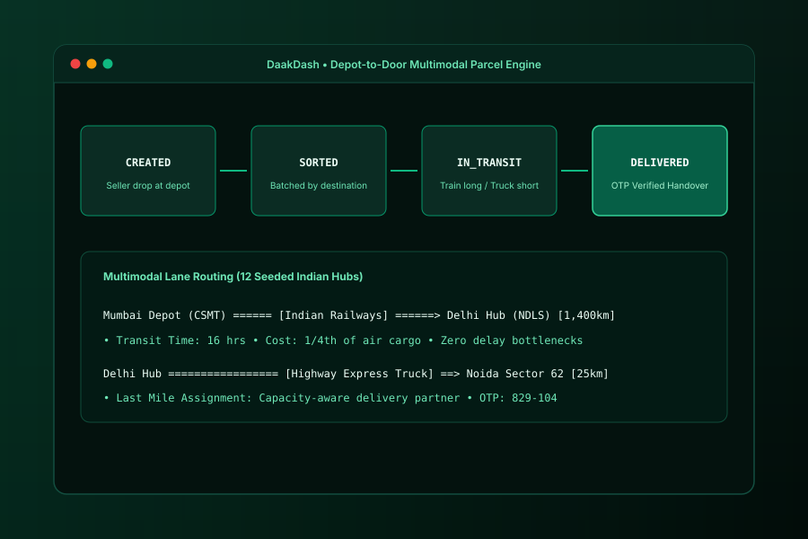

soham.
Backend & Systems Engineer
Architecting high concurrency distributed systems and high throughput backend engines. Currently focused on custom wire protocols, storage engines, and recommendation systems.
Connect With Me
Work & Leadership
Society of Robotics and Automation (SRA), VJTI
Mumbai, India
Mentoring 150+ student engineers in low level systems programming, embedded firmware, and autonomous robotics. Developed control software and state estimation for the Gyroglider rough terrain robotics platform and the Ballerina Cappucina omnidirectional robot.
Open Source Ecosystem
Global / Remote
Merged upstream contributions across major open source platforms: mDNS goodbye packet detection per RFC 6762 in libmicrodns (#53); H.261 encoder/parser API tests and APV profile format memory leak fixes in FFmpeg (#22237, #22693); and array indexing optimization in shap (#4362).
Featured Projects

A distributed log broker inspired by Apache Kafka, built from raw Java NIO selectors. Features append only segment files, offset indexed lookups, a custom binary wire protocol, consumer group rebalancing, and ZooKeeper leader election.

High concurrency ticket booking and payments engine designed to protect finite seat inventory from overselling during flash sales. Seven microservices with ordered Redisson locks, atomic Redis reservations, and a distributed Saga orchestrator.

Two stage recommendation engine trained on 54 million Amazon review interactions across 6.1 million users and 1.2 million items. ALS matrix factorization retrieves candidates from a FAISS index, while LightGBM re ranks them in 2 to 4 milliseconds.

Depot to door courier logistics platform designed around an auditable parcel state machine with optimistic concurrency, JWT gateway routing, Redis rate limiting, and distance based delivery partner assignment.
Learning & Field Notes
Open /learn/ →Java & Distributed Systems Engineering Field Notes
My comprehensive, personal reference manual covering backend engineering from runtime fundamentals to distributed scale. 137 exhaustive chapters synthesized from first principles with zero hyphens and clean mental models.
GitHub Activity
About
I'm Soham Kute, a Systems and Backend Engineer based in Mumbai, currently studying Electronics Engineering with an Aerospace minor at Veermata Jijabai Technological Institute (VJTI) (2023–2027).
I focus on building resilient server side architectures from the ground up: custom network protocols with Java NIO selectors, high concurrency ticketing engines with distributed Sagas, and recommendation systems processing tens of millions of interactions.
Outside of backend systems, I mentor autonomous robotics at SRA VJTI, solve competitive programming challenges (LeetCode 1631, CodeChef 1610 3☆), and contribute to open source infrastructure like FFmpeg and libmicrodns.